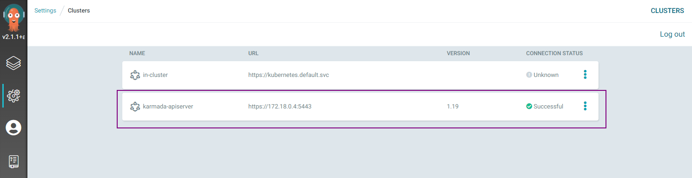
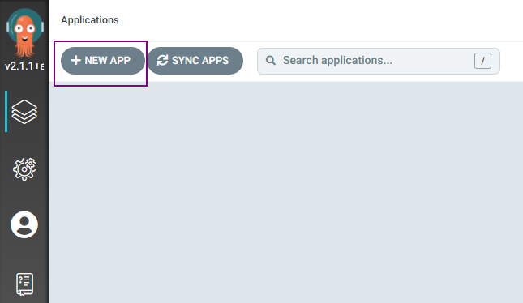
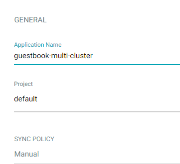
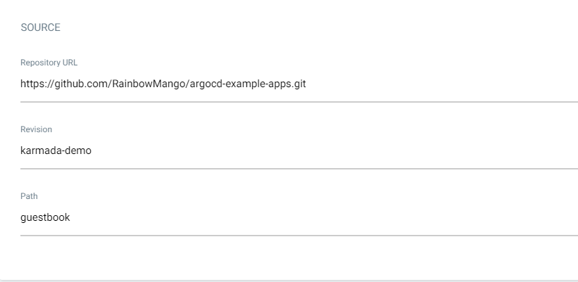
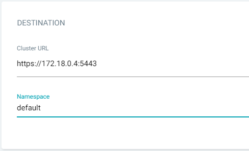
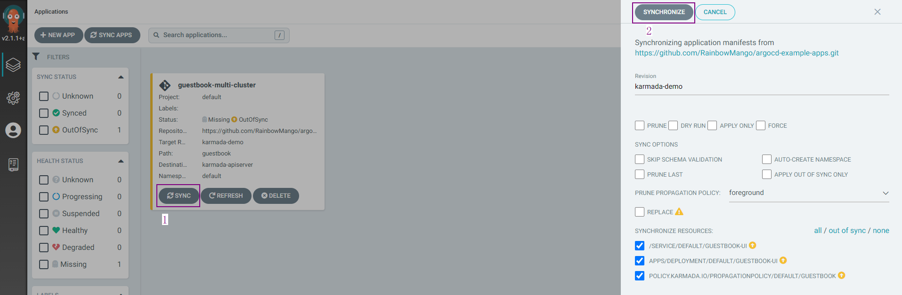
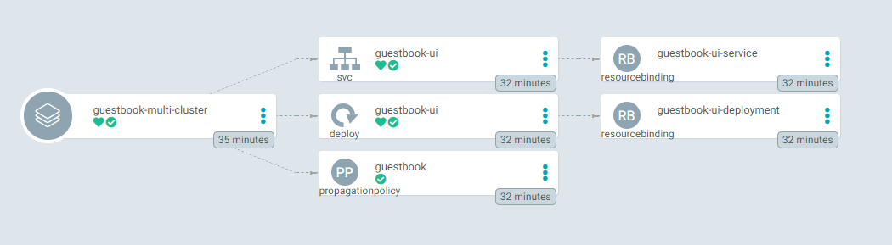
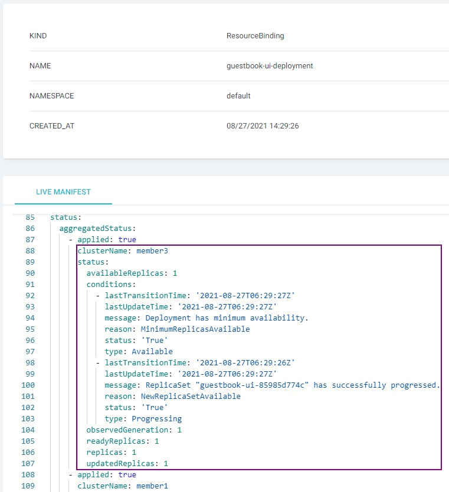
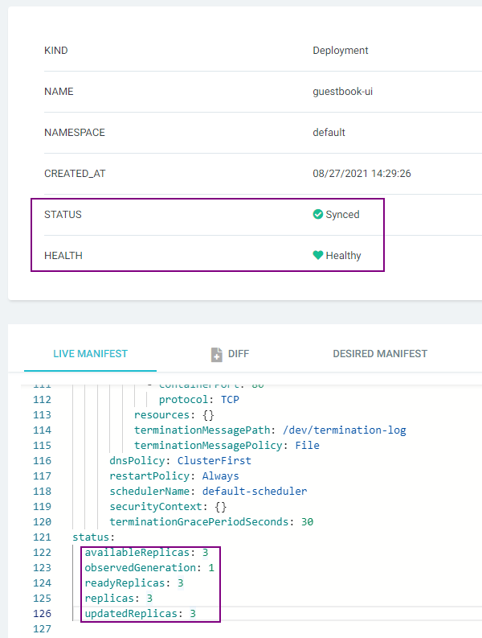

Working with Argo CD
This topic walks you through how to use the Argo CD to manage your workload
across clusters with Karmada.
Prerequisites
Argo CD Installation
You have installed Argo CD following the instructions in Getting Started.
Karmada Installation
In this example, we are using a Karmada environment with at lease 3 member clusters joined.
You can set up the environment by hack/local-up-karmada.sh, which is also used to run our E2E cases.
# kubectl get clusters
NAME VERSION MODE READY AGE
member1 v1.19.1 Push True 18h
member2 v1.19.1 Push True 18h
member3 v1.19.1 Pull True 17h
Registering Karmada to Argo CD
This step registers Karmada control plane to Argo CD.
First list the contexts of all clusters in your current kubeconfig:
kubectl config get-contexts -o name
Choose the context of the Karmada control plane from the list and add it to argocd cluster add CONTEXTNAME.
For example, for karmada-apiserver context, run:
argocd cluster add karmada-apiserver
If everything goes well, you can see the registered Karmada control plane from the Argo CD UI, e.g.:

Creating Apps Via UI
Preparing Apps
Take the guestbook as example.
First, fork the argocd-example-apps repo and create a branch
karmada-demo.
Then, create a PropagationPolicy manifest under the guestbook directory.
Creating Apps
Click the + New App button as shown below:

Give your app the name guestbook-multi-cluster, use the project default, and leave the sync policy as Manual:

Connect the forked repo to Argo CD by setting repository url to the github repo url, set revision as karmada-demo,
and set the path to guestbook:

For Destination, set cluster to karmada and namespace to default:

Syncing Apps
You can sync your applications via UI by simply clicking the SYNC button and following the pop-up instructions, e.g.:

More details please refer to argocd guide: sync the application.
Checking Apps Status
For deployment running in more than one clusters, you don't need to create applications for each
cluster. You can get the overall and detailed status from one Application.

The svc/guestbook-ui, deploy/guestbook-ui and propagationpolicy/guestbook in the middle of the picture are the
resources created by the manifest in the forked repo. And the resourcebinding/guestbook-ui-service and
resourcebinding/guestbook-ui-deployment in the right of the picture are the resources created by Karmada.
Checking Detailed Status
You can obtain the Deployment's detailed status by resourcebinding/guestbook-ui-deployment.

Checking Aggregated Status
You can obtain the aggregated status of the Deployment from UI by deploy/guestbook-ui.
